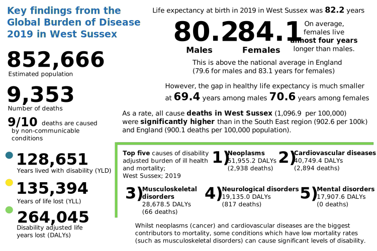
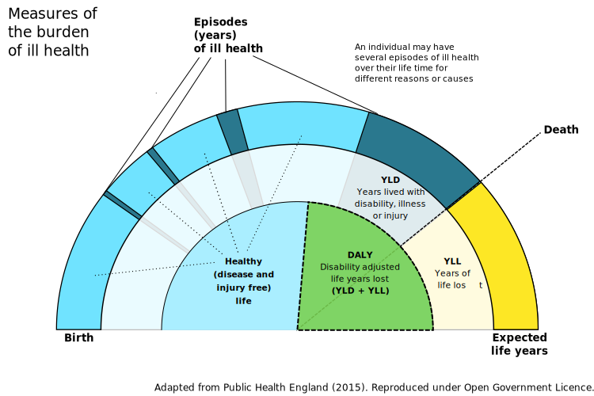

This tool works best in certain browsers such as Chrome, Firefox, and Safari, and does not work so well currently in Internet Explorer.
The Global Burden of Disease (GBD) is one of the most comprehensive, epidemiological collaborations worldwide describing life expectancy as well as mortality and morbidity burden from major diseases and injuries including risk factors at local, regional, national, and global levels.
Data are collected and analysed by a consortium of more than 7,000 researchers to estimate premature death and disability in 195 countries, by age and sex, from 1990 to the present (with the latest data up to 2019), allowing for comparisons over time, across age groups, and in different parts of the world.
Data are refreshed every two years and with each revision, data and methodological innovations are fed into models, annual estimates are comprised for 360 diseases and injuries and 85 risk factors.
In this analysis, which serves to present an overall picture of burden of disease in West Sussex, we aim to describe changes in life expectancy over time as well as explore the top causes of death for those living in West Sussex, comparing to regional and national estimates where possible. We also aim to describe alternative measures of the burden of disease.
Individual country profiles, as well as regional reports created by the IHME are available on the http://www.healthdata.org website. The 2019 GBD profile for England can be found here and the profile for South East region here.
The time period covered in the latest GBD release is 2019, and is prior to the impact on the SARS-CoV-2 Coronavirus (COVID-19) global pandemic.
The COVID-19 pandemic will undoubtably alter the trends in ill health and mortality that have been observed in the population.
However, commissioners, policy makers, and other stakeholders, will need to understand the landscape of the burden of disease prior to the pandemic to understand the impact of it, as well as support the recovery. As soon as it is possible to incorporate the impact of COVID-19 on these estimates the report will be updated.
Whilst we explore the leading causes of death in West Sussex, and the relative changes in life expectancy, the burden of disease can be measured by more than just what kills us and the number of people who have died.
This figure illustrates the different measures of the burden of ill health over the life course of a typical person.
The green section (the DALY) is a useful measure because it also allows the comparison of acute conditions such as stroke or heart attacks with conditions like diabetes or circulatory diseases with conditions such as musculoskeletal disorders which may not ordinarily cause premature death but none the less reduce the quality of someone's life.
DALYs use disability weights (0 = perfect health and 1 = death) which are generated through consultations with clinicians and other experts. This helps to account for those conditions which can be well managed.
As such, a DALY represents the amount of time in sub-optimal health and our goal in public health is to reduce the DALY values where possible and improve the chances of individuals spending more of their lives in good quality healthy states.
There are a number of caveats and limitations you should consider when using these estimates
Whilst females may live longer lives than males, in West Sussex and nationally, females tend to spend more of their lives living with disability or in 'sub-optimal' health, compared to males.
The figure on the right shows the change in both life expectancy at birth and healthy life expectancy. You can hover or click on a circle to find out more.
Females are on the top blue line, and males are in orange.
The Global Burden of Disease models estimates to upper tier local authority level, and we know that this masks variation in health experiences at a much smaller geographical level.
A separate report on the variation in Life Expectancy at a neighbourhood level geography call a Middle Super Output Area, is available at the https://sussex-local-mortality.netlify.app/ webpage.
In 2019, there were estimated to be 9,353 deaths among those who live in West Sussex. As a rate per 100,000 population (a way to compare different areas), West Sussex (with a rate of 1,097 deaths per 100,000 people) had significantly higher mortality than in the South East region (903 deaths per 100,000) and England overall (900 deaths per 100,000 people).
In 2019, almost 90% of deaths (8,342 deaths) in West Sussex were caused by non-communicable diseases (these are coloured blue/purple in the figure). Communicable, maternal, neonatal and nutritional diseases (coloured red on the figure) accounted for 8% of deaths (741 deaths) and the majority of these are respiratory infections. Injuries caused 3% (270 deaths).
Roughly half of the deaths in the county in 2019 were amongst males (4,586 deaths, 49% of all deaths), with 4,767 deaths amongst females.
The figure shows the top 10 causes of deaths in West Sussex, in 2019. These are the 'level two' cause groups. You can use the drop down menu below to toggle between viewing all people or just females or males.
In West Sussex, the two largest cases of death accounted for nearly two thirds of deaths in 2019. These were neoplasms (cancers) which were estimated to cause 2,938 deaths, and cardiovascular diseases (such as heart attacks, strokes, atrial fibrillation and aortic aneurysms) accounting for 2,938 deaths.
There are a number of differences in the top ten causes of death for males and females. Whilst the top two causes are the same for males and females, the third biggest cause of death for males was chronic respiratory diseases (such as chronic obstructive pulmonary disease (COPD) and other lung conditions). For females, the third largest cause of death in West Sussex was neurological disorders such as dementia, epilepsy, motor neurone disease, and multiple sclerosis.
Self harm was the 10th biggest level 2 cause of death overall in West Sussex (72 deaths, around 1% of all deaths in the county) and three quarters of those self-harm and interpersonal violence deaths were among males (53 deaths). For females, however, self-harm does not appear in the top ten level 2 causes of death and is replaced by musculoskeletal disorders as having a greater impact on mortality in West Sussex estimated to be attributable to 48 deaths in 2019 among females. The 48 musculoskeletal deaths amongst females represent almost three quarters of musculoskeletal deaths overall.
The table shows the top ten level two causes of ill health for 2019 in West Sussex, with four columns representing the four measures of burden (deaths, YLLs, YLDs and DALYs). This highlights that there are stark differences in ranks of conditions depending on the measure you use.
For some conditions, the majority of deaths occur at a relatively old age and as such the YLLs (the premature life years lost) may be fairly low, particularly if the condition can be managed well for a number of years, whilst YLDs (years lived with disability) may be relatively high.
An example of this is the mental disorders group of conditions (which includes schizophrenia, depressive disorder, anxiety, and eating disorders as well as autism spectrum disorder). Mental disorders ranked 20th out of 22 conditions for deaths and YLLs, yet this group of conditions ranks 2nd for years lived with disability indicating that mental disorders impose a substantial burden of disability on the population with those who have these conditions expected to live a large part of their lifetime in 'sub-optimal health'. When using the overall burden, as measured by DALYs, mental disorders ranks 5th out of 22.
Another example is musculoskeletal conditions which account for very few deaths (66 deaths, or less than 1% of deaths in West Sussex in 2019) but were estimated to be responsible for almost one in four years of life lived with disability (27,820, 22% of YLDs) in West Sussex in 2019.
Other conditions have low years lived with disability and high premature years of life lost. The respiratory infections and tuberculosis disease group includes lower and upper respiratory infections, Otitis media (inflammatory diseases of the middle ear) and Tuberculosis. Based on the findings of the GBD study, people might expect to contract these illnesses early in their lifetimes and suffer for a limited time before dying as a result of the condition.
Remember, the overall burden as measured by DALYs is the sum of YLLs and YLDs and this does not take into account which aspect (premature death or long life living with the burden of disease) contributes more.
Based on DALYs, the condition group sense organ diseases (including blindness and visual impairment caused by Glaucoma, Cataract, and Macular degeneration as well as hearing loss) has the equivalent burden (7,847 DALYs) to respiratory infections and tuberculosis (7,973 DALYs).
An obvious limitation of using DALYs is that the level of disability experienced by individuals will vary from minimal interruption to significant disruption of daily life and dependence on others for care.
As a result, it is recommended to consider all measures of burden for a given condition to understand how it impacts the population.
The level two causes of ill health can be further divided into 169 'level three' causes (and in some cases can be broken down even further). Use the drop down menu below to toggle between deaths and the other measures of burden for West Sussex residents (both males and females) in 2019.
The figure is split into six parts; along the top from, left to right, you can see neoplasms (cancer), chronic respiratory diseases and musculoskeletal disorders. Along the bottom are cardiovascular diseases, neurological disorders and lastly the remaining condition groups.
It is clear that cancer and cardiovascular diseases overall are the biggest causes of mortality. Within these groups it is isch[a]emic heart disease and stroke which are the two biggest level three causes in the cardiovascular group and lung and colon cancers are the biggest causes of death in the neoplasm group. Lower respiratory infections, COPD and dementia are the three leading causes of death outside of cancer and cardiovascular disease. The pattern is similar for deaths and in years of life lost as a measure of premature mortality.
Musculoskeletal disorders, in comparison, contribute very little to mortality as discussed in the previous section. However, you can see by switching to view years lived with disability that low back pain, neck pain and osteoarthritis are much greater contributors to the burden of disease and dwarf those conditions which tend to be bigger killers.
Depressive and anxiety disorders, falls, headaches and migraines, diabetes, and hearing loss are all conditions which may not always cause death but nonetheless contribute substantially to the disabilities and sub-optimal health experienced by individuals in West Sussex.
When combining estimates of premature mortality and disability adjusted life years, individual level three conditions stick out across the condition groups. There are: isch[a]emic heart disease, low back pain, COPD, stroke, lung cancers, and diabetes.
Have things stayed the same, what was the picture like in West Sussex in the last 10 years.
To account for differences in population size and demographics, the remaining analyses use standardised estimates which detail the number (e.g. deaths) per 100,000 population. More information on standardising rates is given in the box below.
You can toggle each of the measures of burden from deaths, to DALYs.
Looking at crude estimates helps to know what the true impact might be for our area (e.g. to anticipate the number of patients a service might need to cater for, the number of cases) and this can help to plan services.
You could compare these crude estimates with those in other areas, or over time, to see if things are better in some areas or are improving over time, although any differences (or similarities) in estimates could be at least in part due the underlying differences in populations (e.g. areas with fewer or greater numbers of older people, or the sheer size of the population).
As an example, area A may have recorded 2,000 deaths and area B recorded 1,500 deaths. You might think that area A has a much bigger issue of mortality than area B. However, if area A has a population of 500,000, the rate of deaths would be 400 deaths per 100,000 population. If area B has a population of 300,000, then the rate of deaths is higher in area B (500 per 100,000 population).
In this final section we explore how the deaths and other measures of burden in West Sussex compare to national estimates. The figure shows the last ten years of estimated rates per 100,000 for West Sussex for each of the level two burden cause groups with the colour of the dot representing whether the rate was significantly higher, lower, or similar to the rate for either the region or nationally.
As with the other sections, you can also toggle each of the measures of burden from deaths, to DALYs. Hover over a dot to see more information appear under the figure.
Show West Sussex per 100,000 population ()
caused by: with dots coloured by comparison to:
For the most part, West Sussex estimated burden is similar to that of regional and national estimates; particularly when viewing age standardised rates.
Age standardising not only controls for the number of people in an area but also the age structure of a population. As some conditions and outcomes are more likely among older age groups, you might expect to find the burden of disease higher in West Sussex as it has a relatively older age structure compared to the South East and England overall. Age standardising helps to remove the potential confounding effect that age has.
For example, deaths caused by neoplasms (cancer) have been estimated to be consistently significantly higher than in England overall, but this difference disappears when you look at age standardised differences.
Looking at all cause deaths, in West Sussex they are significantly higher when looking at the all age rate. However, when the estimates are age standardised, West Sussex all cause deaths are significantly lower compared to national rates.
This brief report has been possible thanks to the publicly available datasets from the Global Burden of Disease Study.
Data downloaded from the GBD online results tool; Institute for Health Metrics and Evaluation (IHME). Findings from the Global Burden of Disease Study 2017. Seattle, WA: IHME, 2018'.
To find out more about the GBD study please go to [http://www.healthdata.org/gbd/2019]
| Sex | Deaths | YLLs (Years of lost life) | YLDS (Years lived with disability) | DALYs (Disability-adjusted life years lost) |
|---|